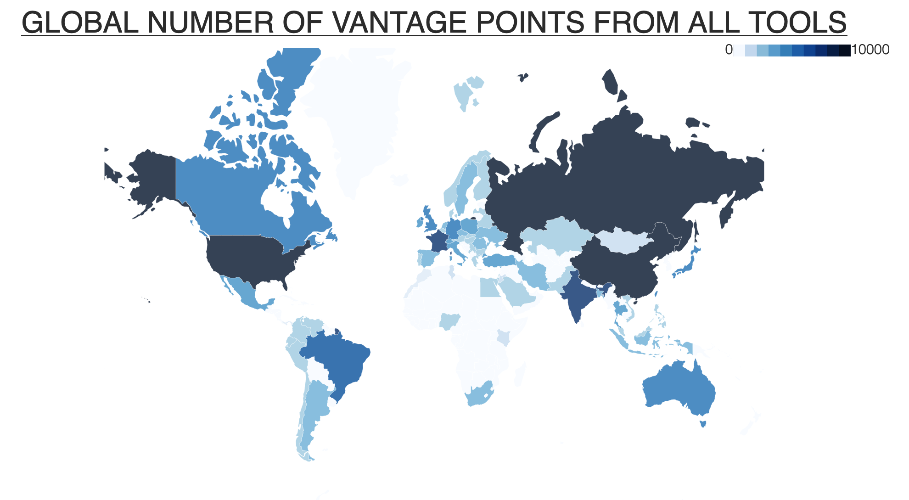
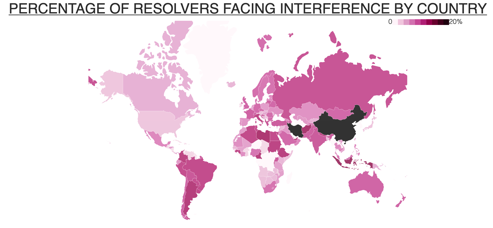
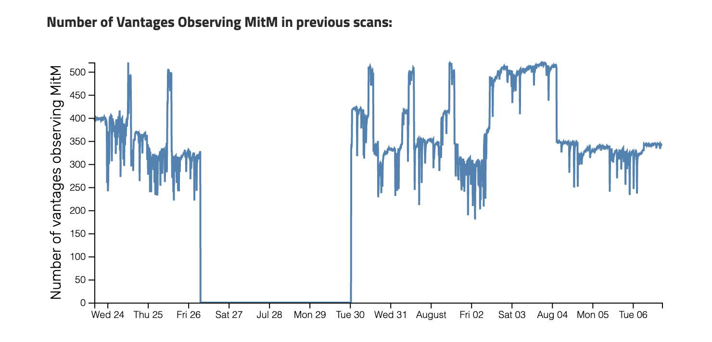
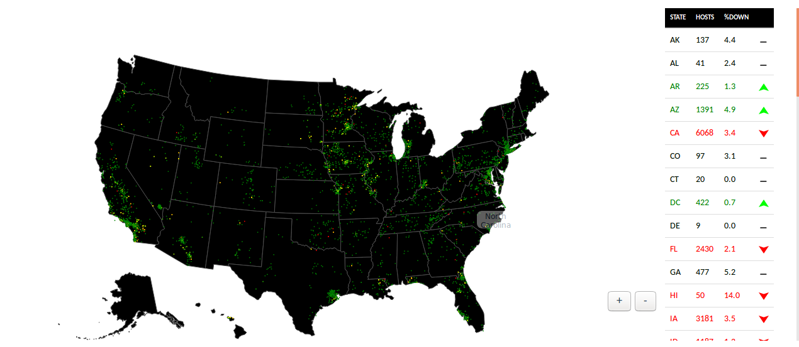
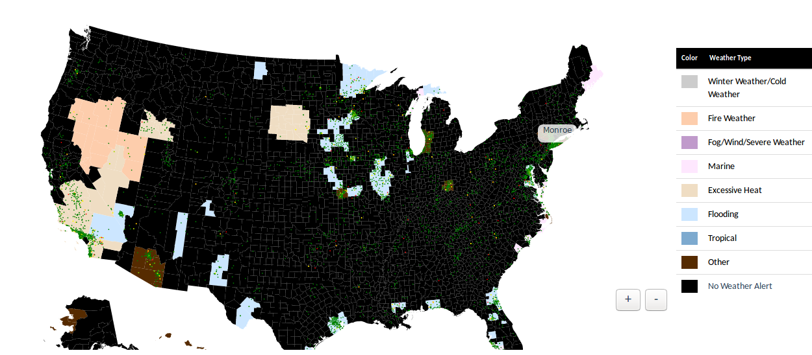

Projects
Censored Planet Observatory
I am the primary developer and maintainer of the Censored Planet Observatory, which is a platform for measuring Internet censorship and network interference continously and globally. The observatory uses thousands of remote infrastructural vantage points from over 170 countries to continuously monitor disruption tactics used by authorities around the world. All data collected using the Observatory is made public for use by researchers and policy-makers, and we have already released several reports based on data from the Observatory. I also maintain the Observatory website, which contains several visualizations of our data.
Map showing the Observatory's vantage point distribution:

Map showing percentage of disruption detected using Satellite in different countries:

Kazakhstan's HTTPS Interception
I led Censored Planet's investigation into the interception of HTTPS connections of Internet users in Kazakhstan. The Kazakhstan government began using a fake root CA from July 20 2019 to perform a man-in-the-middle (MitM) attack against HTTPS connections to websites including Facebook, Twitter, and Google. This behavior significantly weakened Internet for Kazakh Internet users, who were instructed to manually trust the fake CA certificate. Our investigation suggested that only a portion of the Internet users in Kazakhstan were affected in what appeared to be a pilot test of the system. Our live measurements reveal that the attack was stopped on August 6 2019, and an official statement from the Kazakhstan Government suggests they will turn on the system "when necessary".
Live tracking of Censored Planet observatory vantage points observing the intercepion:

Thunderping Live
As a research intern at University of Maryland, I worked with Prof. Neil Spring on measuring last-mile residential Internet outages in areas affected by severe weather conditions. The Thunderping tool uses several vantage points to actively prove residential IP addresses. The real-time website shows Internet outages as they occur. The tool helped visualize heavy outages during Hurricanes Harvey and Irma.
Map showing outage statistics aggregated by state:

Map showing present weather condition and outage information:
